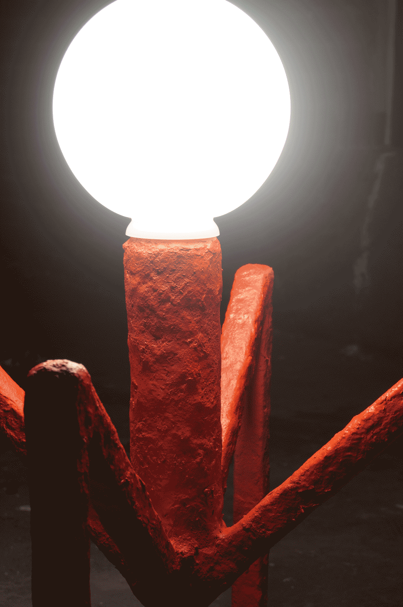
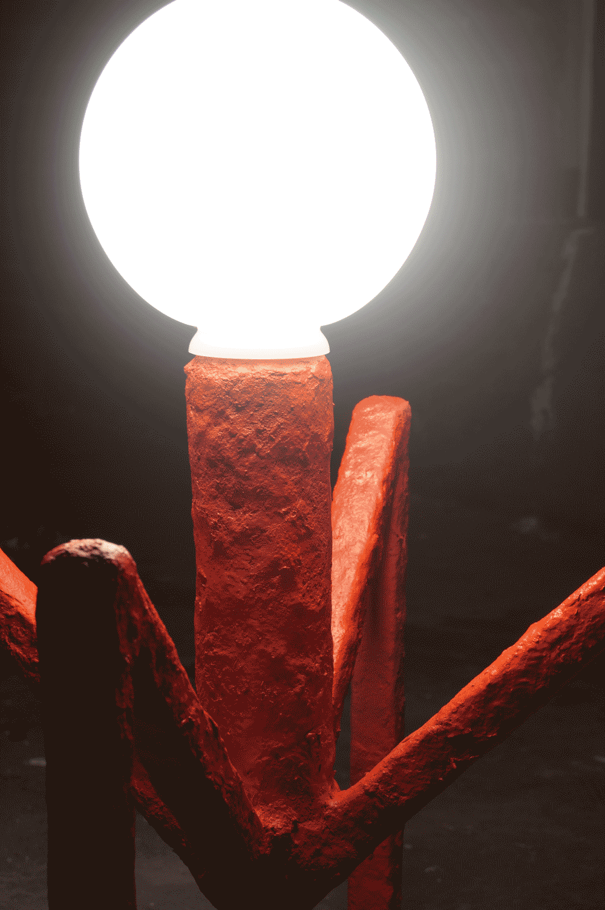

Rite of passage is the step into the unknown -
A world of mystery and imagination, of horror and bliss, the confrontation with the unthinkable and the transformation into a new existence.
Join us on the Heroes Journey into the abyss of
our collective consciousness and find that your own story is but the story of us all.
Rite of passage - the price of a new life is the loss of your old.
Rite of Passage is Finn Meiers first Solo Show at the Functional Art Gallery
in Berlin, Summer 2019
The Whole Project was autobiographic as well as trying to reflect on archetypical ideas, that everyone can relate to.
As my personal Rite of passage this project was my graduation from art university and marked the beginning of a new chapter
in my life. The Project is based on the Book "The Hero with a thousand faces" by Joseph Campbell (1949, Pantheon Books) In which Campbell describes the blueprint for mythology and legend which we relate to on a deep level and find in contemporary
stories like "Star Wars" or "Harry Potter"
Rite of passage is a journey to these Roots of narration by expressing it through contemporary form and material.
The Heroes Journey was broken down into steps, each step explored through collage, sketches and analysis. getting hold of its representative meaning and grasping it through form, material and use.
I - UDJAT

The Hero hears the call, feels that something is off, has to dive in, see the inner world to understand
"Udjat" is the symbological first step of the Journey that starts with an idea of change, a vision of improvement and healing. Light shines through layers of painstained PVC hinting to the glory that lies hidden deep within.
"Udjat" steel, steel wire, neon, PVC
II - HERMIT
To Embark on his Journey, the Hero meets the Hermit that guides him towards the Threshold of the Underworld
"Hermit" is the old Hero, the Teacher the mentor, that guides and shows the Hero where to go.
"Hermit" wood, steel, polyurethane, paint, LED, PVC
III - BACCHUS / SPIDERDUDE
 

Tumbling into the underworld the Hero has to face friends and foes, seduction and opposition - the opponents that fill his head with ideas but are a hindrance from true understanding.
As Bacchus represents the human condition and its excitement of drugs, porn and Netflix, Spiderdude is composed like a virus - waiting for a weak moment to attack.
"Bacchus" steel, velvet, PU-foam
"Spiderdude" steel, paper pulp, glass, paint,LED
IV - EDGE CHAIR

Overcoming the mental state of avoidance there is only confrontation left. Cold, hard and brutal stands it there, forcing the Hero to face himself.
The "Edge Chair" is the end of the journey. The Death of the Hero is inevitable. He has to succumb to the inacceptable and die - to be reborn.
"Edge Chair" tiles, PU-foam,
V - COSMIC DANCER
Bliss. Understanding and beauty. The Cosmic Dancer is the great boon the ultimate goal for the hero and his new beginning. The infinity of creation.
"Cosmic Dancer" is the new life emerging from the Abyss of infinity the great treasure that the hero finds, the transforming Energy.
"Cosmic Dancer" steel, chrome plated glass, mirror, acrylic, aluminum
VI - OCTOPLUS
Being transformed and shedding his old pain, the hero emerges from the underworld to communicate his message: unity.
We all are the hero, we all are One.
"Octoplus" is a symbol for the humanitarian brotherhood in which we all are united, emerging into infinite light.
"Octoplus" steel, PET mesh, neon, wood